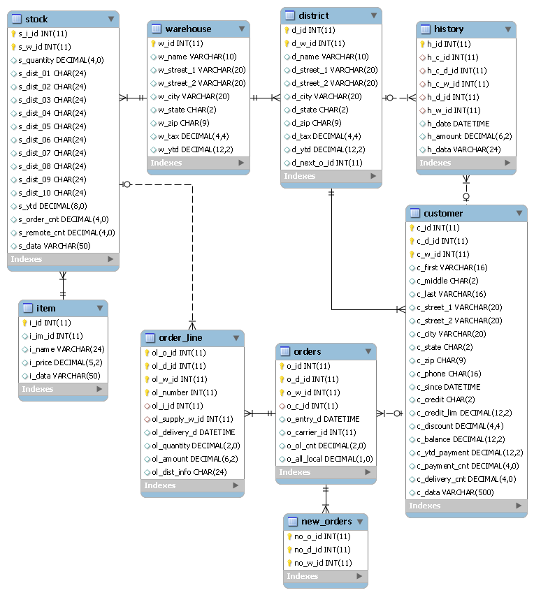

TPC-C とは、 TPC によって策定されたベンチマーク仕様の一つです。卸売業における注文・支払いなどの業務をモデルにしたトランザクションを実行し、システムの性能を測定します。データベースのER図を以下に示します。
TPC-Cでは5種類のトランザクションが定義されています。5種類のトランザクションの実行比率は10:10:1:1:1となっています。
New-Orderトランザクションの内容を擬似コードで表すと、以下のようになります。
SELECT FROM warehouse JOIN customer;
SELECT FROM district FOR UPDATE;
UPDATE district;
INSERT INTO orders;
INSERT INTO new_orders;
LOOP {
SELECT FROM item;
SELECT FROM stock FOR UPDATE;
UPDATE stock;
INSERT INTO order_line;
}
COMMIT;
同様に、Paymentトランザクションの内容を以下に示します。
SELECT FROM warehouse FOR UPDATE;
UPDATE warehouse;
SELECT FROM district FOR UPDATE;
UPDATE district;
SELECT FROM customer;
SELECT FROM customer FOR UPDATE;
UPDATE customer;
INSERT INTO history;
COMMIT;
Order-Statusトランザクションの内容を以下に示します。
SELECT FROM customer;
SELECT FROM customer;
SELECT FROM orders WHERE id = (SELECT MAX(id) FROM orders);
SELECT FROM order_line;
COMMIT;
Deliveryトランザクションの内容を以下に示します。
LOOP {
SELECT FROM new_orders WHERE id = (SELECT MIN(id) FROM new_orders) FOR UPDATE;
DELETE FROM new_orders;
SELECT FROM orders FOR UPDATE;
UPDATE orders;
UPDATE order_line;
SELECT FROM order_line;
UPDATE customer;
}
COMMIT;
Stock-Levelトランザクションの内容を以下に示します。
SELECT FROM district JOIN order_line JOIN stock;
COMMIT;
TPC-CのCRUD図を以下に示します。
| Transaction | warehouse | district | customer | history | item | stock | orders | new_orders | order_line |
|---|---|---|---|---|---|---|---|---|---|
| New-Order | R | RU | R | R | RU | C | C | C | |
| Payment | RU | RU | RU | C | |||||
| Order-Status | R | R | R | ||||||
| Delivery | U | RU | RD | RU | |||||
| Stock-Level | R | R | R |
Tiny TPC-Cは、TPC-C Standard Specification 5.10.1の仕様を抜粋しJdbcRunnerのスクリプトとして実装したものです。仕様書のうち以下の章節を実装しています。
それ以外の章節については実装されていないか、仕様を満たしていません。従ってTiny TPC-Cのテスト結果は正式なTPC-Cのスコアではありません。
Tiny TPC-Cは以下の二つのスクリプトから構成されています。
Tiny TPC-Cは以下のRDBMSに対応しています。
RDBMSのバージョンは実際に動作確認を行ったバージョンを示しており、これ以外のバージョンでも動作する可能性はあります。
MySQLにおけるテストの準備手順を以下に示します。Oracle Database、PostgreSQLについてはscripts/tpcc_load.jsのコメントをご参照ください。
MySQLにrootユーザで接続し、tpccユーザを作成します。
> mysql -u root
mysql> GRANT ALL PRIVILEGES ON tpcc.* TO tpcc@'%' IDENTIFIED BY 'tpcc';
Query OK, 0 rows affected (0.00 sec)
ネットワーク環境によっては、接続元ホストを制限したりtpccをより安全なパスワードに変更することをおすすめします。
tpccデータベースを作成します。
mysql> CREATE DATABASE tpcc;
Query OK, 1 row affected (0.00 sec)
scripts/tpcc_load.jsを用いてテストデータの生成を行います。このスクリプトは以下の処理を行っています。
> java JR scripts\tpcc_load.js
02:53:00 [INFO ] > JdbcRunner 1.2
02:53:00 [INFO ] [Config]
Program start time : 20111011-025300
Script filename : scripts\tpcc_load.js
JDBC driver : -
JDBC URL : jdbc:mysql://localhost:3306/tpcc?rewriteBatchedStatements=true
JDBC user : tpcc
Load mode : true
Number of agents : 4
Auto commit : false
Debug mode : false
Trace mode : false
Log directory : logs
Parameter 0 : 0
Parameter 1 : 0
Parameter 2 : 0
Parameter 3 : 0
Parameter 4 : 0
Parameter 5 : 0
Parameter 6 : 0
Parameter 7 : 0
Parameter 8 : 0
Parameter 9 : 0
02:53:01 [INFO ] Tiny TPC-C 1.1 - data loader
02:53:01 [INFO ] -param0 : Scale factor (default : 16)
02:53:01 [INFO ] -nAgents : Parallel loading degree (default : 4)
02:53:01 [INFO ] Scale factor : 16
02:53:01 [INFO ] Parallel loading degree : 4
02:53:01 [INFO ] Dropping tables ...
02:53:01 [WARN ] JavaException: com.mysql.jdbc.exceptions.jdbc4.MySQLSyntaxErrorException: Unknown table 'order_line'
02:53:01 [WARN ] JavaException: com.mysql.jdbc.exceptions.jdbc4.MySQLSyntaxErrorException: Unknown table 'new_orders'
02:53:01 [WARN ] JavaException: com.mysql.jdbc.exceptions.jdbc4.MySQLSyntaxErrorException: Unknown table 'orders'
02:53:01 [WARN ] JavaException: com.mysql.jdbc.exceptions.jdbc4.MySQLSyntaxErrorException: Unknown table 'stock'
02:53:01 [WARN ] JavaException: com.mysql.jdbc.exceptions.jdbc4.MySQLSyntaxErrorException: Unknown table 'item'
02:53:01 [WARN ] JavaException: com.mysql.jdbc.exceptions.jdbc4.MySQLSyntaxErrorException: Unknown table 'history'
02:53:01 [WARN ] JavaException: com.mysql.jdbc.exceptions.jdbc4.MySQLSyntaxErrorException: Unknown table 'customer'
02:53:01 [WARN ] JavaException: com.mysql.jdbc.exceptions.jdbc4.MySQLSyntaxErrorException: Unknown table 'district'
02:53:01 [WARN ] JavaException: com.mysql.jdbc.exceptions.jdbc4.MySQLSyntaxErrorException: Unknown table 'warehouse'
02:53:01 [INFO ] Creating tables ...
02:53:01 [INFO ] Loading item ...
02:53:02 [INFO ] item : 10000 / 100000
02:53:03 [INFO ] item : 20000 / 100000
02:53:03 [INFO ] item : 30000 / 100000
02:53:04 [INFO ] item : 40000 / 100000
02:53:05 [INFO ] item : 50000 / 100000
02:53:05 [INFO ] item : 60000 / 100000
02:53:06 [INFO ] item : 70000 / 100000
02:53:07 [INFO ] item : 80000 / 100000
02:53:07 [INFO ] item : 90000 / 100000
02:53:08 [INFO ] item : 100000 / 100000
02:53:08 [INFO ] Loading warehouse id 1 by agent 3 ...
02:53:08 [INFO ] [Agent 3] Loading warehouse ...
02:53:08 [INFO ] Loading warehouse id 2 by agent 1 ...
02:53:08 [INFO ] [Agent 1] Loading warehouse ...
02:53:08 [INFO ] Loading warehouse id 3 by agent 2 ...
02:53:08 [INFO ] [Agent 2] Loading warehouse ...
02:53:08 [INFO ] [Agent 1] Loading district ...
02:53:08 [INFO ] [Agent 2] Loading district ...
02:53:08 [INFO ] Loading warehouse id 4 by agent 0 ...
02:53:08 [INFO ] [Agent 0] Loading warehouse ...
02:53:08 [INFO ] [Agent 0] Loading district ...
02:53:08 [INFO ] [Agent 3] Loading district ...
02:53:08 [INFO ] [Agent 3] Loading customer and history ...
02:53:08 [INFO ] [Agent 0] Loading customer and history ...
02:53:08 [INFO ] [Agent 2] Loading customer and history ...
02:53:08 [INFO ] [Agent 1] Loading customer and history ...
02:53:21 [INFO ] [Agent 1] customer : 10000 / 30000
02:53:21 [INFO ] [Agent 3] customer : 10000 / 30000
02:53:22 [INFO ] [Agent 0] customer : 10000 / 30000
02:53:23 [INFO ] [Agent 2] customer : 10000 / 30000
...
03:12:22 [INFO ] [Agent 3] orders : 30000 / 30000
03:12:33 [INFO ] [Agent 2] orders : 30000 / 30000
03:12:34 [INFO ] [Agent 0] orders : 30000 / 30000
03:12:38 [INFO ] [Agent 1] orders : 30000 / 30000
03:12:38 [INFO ] Completed.
03:12:38 [INFO ] < JdbcRunner SUCCESS
「Unknown table ‘order_line’」などの警告は、存在しないテーブルを削除しようとして出力されるものです。無視して構いません。
-param0を指定することによって、スケールファクタを変更することが可能です。スケールファクタ1あたりwarehouseテーブルが1レコード増加し、その他のテーブルもレコード数が以下のように増加します。デフォルトのスケールファクタは16です。
| Table | Records |
|---|---|
| warehouse | sf x 1 |
| district | sf x 10 |
| customer | sf x 30,000 |
| history | sf x 30,000 |
| item | 100,000 |
| stock | sf x 100,000 |
| orders | sf x 30,000 |
| new_orders | sf x 9,000 |
| order_line | sf x 300,000 (approx.) |
-nAgentsを指定することによって、ロードの並列度を変更することが可能です。RDBMSがCPUスケーラビリティに優れておりクアッドコアなどCPUコア数の多い環境では、並列度を上げることでロード時間を短縮することができます。デフォルトの並列度は4です。
> java JR scripts\tpcc_load.js -nAgents 8 -param0 100
scripts/tpcc.jsを用いてテストを実行します。JdbcRunnerを動作させるマシンは、テスト対象のマシンとは別に用意することを強くおすすめします。
Oracle Java SE/OpenJDKを利用する際は、Server VMを用いることをおすすめします。詳細は JDK 6 仮想マシン (VM) 関連 API & 開発者ガイド をご参照ください。
> java -server JR scripts\tpcc.js -jdbcUrl jdbc:mysql://server/tpcc
03:14:51 [INFO ] > JdbcRunner 1.2
03:14:51 [INFO ] [Config]
Program start time : 20111011-031451
Script filename : scripts\tpcc.js
JDBC driver : -
JDBC URL : jdbc:mysql://server/tpcc
JDBC user : tpcc
Warmup time : 300 sec
Measurement time : 900 sec
Number of tx types : 5
Number of agents : 16
Connection pool size : 16
Statement cache size : 40
Auto commit : false
Sleep time : 0,0,0,0,0 msec
Throttle : - tps (total)
Debug mode : false
Trace mode : false
Log directory : logs
Parameter 0 : 0
Parameter 1 : 0
Parameter 2 : 0
Parameter 3 : 0
Parameter 4 : 0
Parameter 5 : 0
Parameter 6 : 0
Parameter 7 : 0
Parameter 8 : 0
Parameter 9 : 0
03:14:53 [INFO ] Tiny TPC-C 1.1
03:14:53 [INFO ] Scale factor : 16
03:14:53 [INFO ] tx0 : New-Order transaction
03:14:53 [INFO ] tx1 : Payment transaction
03:14:53 [INFO ] tx2 : Order-Status transaction
03:14:53 [INFO ] tx3 : Delivery transaction
03:14:53 [INFO ] tx4 : Stock-Level transaction
03:14:54 [INFO ] [Warmup] -299 sec, 29,51,7,2,4 tps, (29,51,7,2,4 tx)
03:14:55 [INFO ] [Warmup] -298 sec, 25,21,2,4,2 tps, (54,72,9,6,6 tx)
03:14:56 [INFO ] [Warmup] -297 sec, 77,64,7,7,6 tps, (131,136,16,13,12 tx)
03:14:57 [INFO ] [Warmup] -296 sec, 81,87,7,5,7 tps, (212,223,23,18,19 tx)
03:14:58 [INFO ] [Warmup] -295 sec, 102,86,10,12,13 tps, (314,309,33,30,32 tx)
...
03:34:49 [INFO ] [Progress] 896 sec, 59,70,5,9,8 tps, 57542,57533,5755,5753,5754 tx
03:34:50 [INFO ] [Progress] 897 sec, 65,65,4,8,5 tps, 57607,57598,5759,5761,5759 tx
03:34:51 [INFO ] [Progress] 898 sec, 55,75,7,5,9 tps, 57662,57673,5766,5766,5768 tx
03:34:52 [INFO ] [Progress] 899 sec, 54,47,10,5,4 tps, 57716,57720,5776,5771,5772 tx
03:34:53 [INFO ] [Progress] 900 sec, 75,57,5,4,6 tps, 57791,57777,5781,5775,5778 tx
03:34:53 [INFO ] [Total tx count] 57791,57777,5781,5775,5778 tx
03:34:53 [INFO ] [Throughput] 64.2,64.2,6.4,6.4,6.4 tps
03:34:53 [INFO ] [Response time (minimum)] 7,7,6,95,4 msec
03:34:53 [INFO ] [Response time (50%tile)] 134,22,45,220,263 msec
03:34:53 [INFO ] [Response time (90%tile)] 220,86,94,551,419 msec
03:34:53 [INFO ] [Response time (95%tile)] 249,107,107,629,488 msec
03:34:53 [INFO ] [Response time (99%tile)] 516,192,146,841,783 msec
03:34:53 [INFO ] [Response time (maximum)] 1277,839,703,1359,1144 msec
03:34:54 [INFO ] < JdbcRunner SUCCESS
TPC-Cには5種類のトランザクションが定義されていることから、Tiny TPC-Cではそれぞれを別のトランザクションとして集計しています。スループット、レスポンスタイムの出力はそれぞれ左からNew-Order、Payment、Order-Status、Delivery、Stock-Levelトランザクションのものを表しています。
TPC-CのスコアにはNew-Orderトランザクションの1分あたりの実行回数を用います。上記の例では15分間で57,791txですから、スコアは3,852.7tpmとなります。